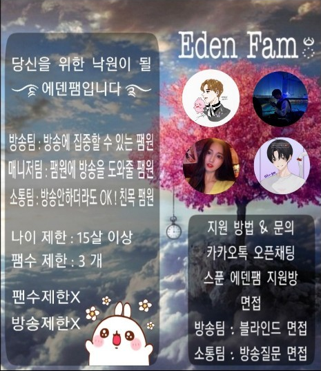

스푼 에덴팸 Spoon Eden Fam
에덴팸 설명
에덴팸 지원
에덴팸 규칙
에덴팸 설명
에덴팸 홍보배사

2020년 3월 2일에 DJ한스가 만든 스푼라디오 팸이다.
"당신의 낙원이 될 에덴팸입니다" 라는 슬로건을 가지고 있다.
인원은 약 40명 정도로 구성, 유지되고 있다.
팸으로 분류하기는 하지만 체계적인 시스템으로 돌아간다고 정신승리중이며,
팸 내에서 방송팀, 예비방송팀, 소통팀, 매니저팀 으로 역할이 나누어져있다.